B2-NiAl Al過剰構造欠陥と副格子モデル化
目的 ：Yamanouchi & Miura (2018) の B2-NiAl 補助図（Fig. 6(a)）を再現する一連の作業を通じて、Al 過剰側の構造空孔が支配的構成欠陥であることを実験2系統の組み合わせだけで示し 、さらにそれを MACE-MP-0 （汎用 MLIP）が体積・格子定数で再現する一方、2SL の定数対近似では正しく記述できないことを明らかにした。最終的に、icet クラスター展開を用いて第一近接から三点群までの有効対相互作用を直接抽出し 、2SL/4SL/8SL 型 CEF（Compound Energy Formalism）CALPHAD モデルへの接続可能性を整理する。
リポジトリ ：minimumtone/machine-learning/laves_fig6/b2_offstoich 主要成果物 ：統合レポート B2_NiAl_Integrated_Report.md 、4SL/8SL 設計書 4SL_B2_MODEL_DESIGN.md 、icet スクリプト run_icet_b2_cluster_expansion.py
進捗（SQS/SRO による高 Al ばらつき低減） ：空孔モデルには 5×5×5 SQS（各組成 10 シード）、反サイトモデルには 4×4×4 追加シード（s3–s12）を投入し、Ni 副格子 1NN Warren–Cowley SRO パラメーターで外れ値を除去した。robust trimmed mean 後の体積標準偏差は、空孔側 0.70/0.72/0.74 でそれぞれ 0.039/0.021/0.022 ų/atom、反サイト側 0.69/0.71/0.75 で 0.029/0.028/0.052 ų/atom と大幅に縮小した。反サイト 0.73 は 0.071 ų/atom と若干残存するため、5×5×5 SQS 追加または SRO しきい値をさらに絞る対応を検討中。
1. 問題設定：B2-NiAl の Ni 過剰・Al 過剰構造欠陥
B2-NiAl （CsCl 型）の化学量論組成は \(x_{\rm Al}=0.5\)。この構造は Ni 副格子（立方体中心）と Al 副格子（頂点）の2つの簡単立方サブラティスからなる。化学量論から外れる場合、以下の2つの「欠陥モデル」が考えられる：
Ni 過剰側 ：余分な Ni が Al 副格子に入る（Ni 反サイト）。Al 過剰側 ：Ni 副格子に構造空孔を形成して Al 量を吸収する。
どちらが支配的かは元素化学ポテンシャル \(\mu_i\) と各欠陥の形成エネルギー に依存する。実験的には、Al 過剰側では密度が低く、原子体積が格子定数 \(a\) から予想される値より大きくなることで、構造空孔の存在が示唆される。ただし「密度を直接測った実験」と「格子定数を測った実験」が独立でなければならない。
この文書の中心的問い
Al 過剰 B2-NiAl の支配的な構成欠陥は、実験2系統（格子定数系と原子体積系）の組み合わせだけで構造空孔と判定できるか？
MACE-MP-0 は体積と格子定数をどの程度再現し、その傾きの非対称性は何を意味するか？
第一近接対相互作用を直接抽出し、2SL から 8SL へと拡張した CALPHAD 副格子モデルにどう落とし込むか？
2. 実験だけで欠陥種を決める：Taylor & Doyle の密度測定
2.1 独立な実験量
Taylor & Doyle (1972, J. Appl. Cryst. 5, 201) は β-NiAl 単相合金の格子定数 \(a(x)\)（X 線回折）と密度 \(\rho(x)\)（Archimedes 法）の両方を測定し、Table 2 に \(a\)、\(\rho\)、単位胞あたり原子数 \(n\) をまとめている。密度は \(a(x)\) とは独立に測定される量であり、
\[
n = \frac{\rho a^3}{M} N_{\rm A}
\]
から求まる（\(M\) は平均原子量）。B2 の慣用胞は 2 サイトなので、Al 過剰側の構造空孔分率は
\[
c_{\rm vac} = 1 - \frac{n}{2}
\]
で直接得られる。これは反サイト模型では説明できない：反サイトだけでは常に \(n=2\)、すなわち \(c_{\rm vac}=0\) となる。
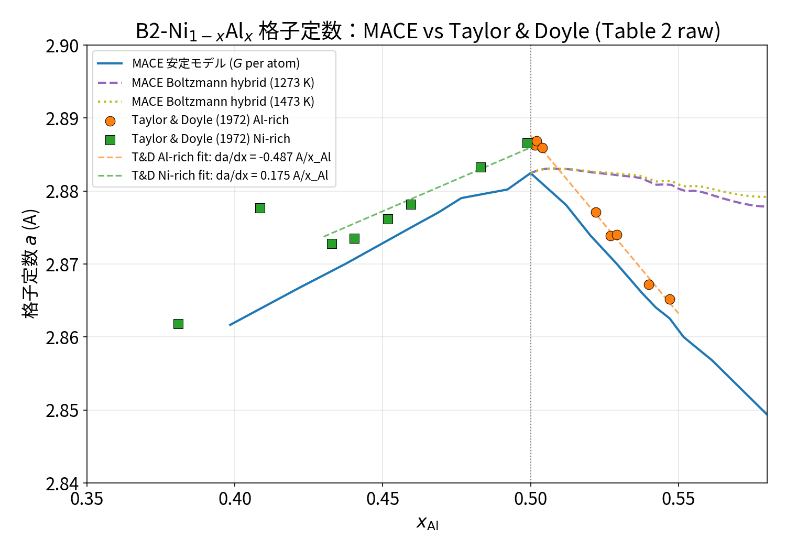
Figure 2.1 Taylor & Doyle (1972) Table 2 の \(a(x)\) と MACE 再現値のオーバーレイ。Al-rich 端点を 45 at.% Ni に修正し、局所傾きで比較した。
2.2 Table 2 から直接求めた構造空孔濃度
\(c_{\rm vac}^{\rm model}=1-1/(2x_{\rm Al})\) は 0 K 的な完全構造空孔模型、\(c_{\rm vac}^{\rm MLIP}\) は MACE-MP-0 自由緩和 + Boltzmann 欠陥モデル選択、\(c_{\rm vac}^{\rm hybrid}\) は 1473 K での空孔・反サイト Boltzmann 混合値。Table 2 の元データをそのまま用いる：
表の組成は両方とも原子分率で統一。Taylor & Doyle Table 2 の元データは Ni を at.% で報告しており、ここでは \(x_{\rm Ni}=({\rm at.\% Ni})/100\) に換算した。
\(x_{\rm Al}\) \(x_{\rm Ni}\) a T-D (Å)\(\rho\) (g/cm³) \(n\)/cell \(c_{\rm vac}^{\rm exp}\) \(c_{\rm vac}^{\rm model}\) \(c_{\rm vac}^{\rm MLIP}\) \(c_{\rm vac}^{\rm hybrid}\) (1473 K) \(p_{\rm Al\,antisite}^{\rm hybrid}\) (1473 K)
0.5015 0.4985 2.8863 5.873 1.989 0.0055 0.0030 0.0030 0.0018 0.0011 0.5020 0.4980 2.8869 5.869 1.988 0.0060 0.0040 0.0040 0.0025 0.0015 0.5040 0.4960 2.8859 5.821 1.974 0.0130 0.0079 0.0079 0.0049 0.0030 0.5220 0.4780 2.8771 5.639 1.920 0.0400 0.0421 0.0421 0.0218 0.0213 0.5270 0.4730 2.8739 5.556 1.893 0.0535 0.0512 0.0512 0.0276 0.0249 0.5400 0.4600 2.8672 5.392 1.845 0.0775 0.0741 0.0740 0.0423 0.0342 0.5471 0.4529 2.8652 5.300 1.817 0.0915 0.0861 0.0860 0.0506 0.0386
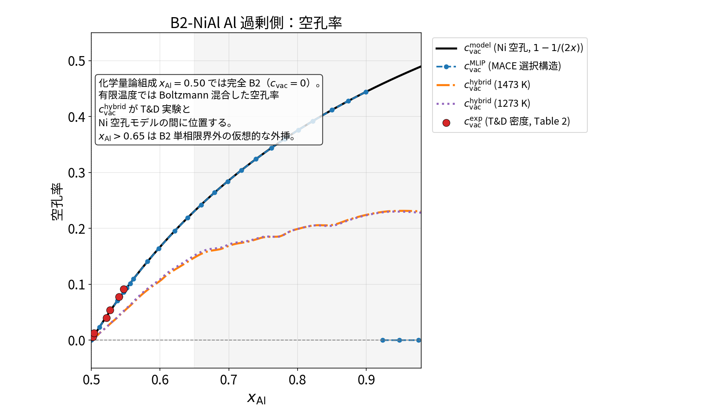
Figure 2.2 Taylor & Doyle の密度と \(a(x)\) から直接求めた Ni 副格子欠陥占有率。\(x_{\rm Al}=0.50\) では Ni 空孔モデル（黒線、\(c_{\rm vac}^{\rm model}=1-1/(2x)\)）も Al 反サイトモデル（緑破線、\(c_{\rm anti}^{\rm model}=x-0.5\)）も完全 B2（\(c=0\)）に一致。有限温度では 2 つの欠陥モデルを Boltzmann 加重して混合し、\(c_{\rm total}^{\rm hybrid}=c_{\rm vac}^{\rm hybrid}+p_{\rm Al\,antisite}/2\)（橙一点鎖線 1473 K、紫点線 1273 K）を与える。青破線は MACE（0 K）の最安定欠陥、赤丸は実験。細い橙線はハイブリッドの空孔分 \((c_{\rm vac}^{\rm hybrid})\)。
\(x_{\rm Al}=0.50\) で 2 つの欠陥モデルは一致 ：化学量論 B2 では完全規則（\(c_{\rm vac}=0\)、\(c_{\rm anti}=0\)）が唯一の状態。Al 過剰側では、余剰 Al を Ni 空孔（黒線）として吸収するか、Ni 副格子を Al で置換する反サイト（緑破線）として吸収するかの 2 つの 0 K 極限が考えられる。どちらも \(x\to0.50^+\) で \(c\to0\) となり、完全 B2 と連続的に接続する。
\(x_{\rm Al}=0.50\)（化学量論 B2）での数値 ：完全 B2 超胞では欠陥数 \(n_{\rm defect}=0\)、原子数 \(N_{\rm atom}=128\) となり、Ni 空孔モデル・Al 反サイトモデル・MACE 最安定モデルはすべて同じ状態を与える。
結論 ：10 % 乖離 し棄却される。対照的に、\(c_{\rm vac}^{\rm exp}\) は構造空孔モデル \(c_{\rm vac}^{\rm model}\)、MACE 値 \(c_{\rm vac}^{\rm MLIP}\) と最大 0.005（相対 5 %）で一致する。
独立性の注記 ：格子定数 \(a(x)\) は X 線回折、密度 \(\rho(x)\) は Archimedes 法で独立に測定されている。\(n\) はその両者から導かれるから、\(a\) と \(\rho\) の独立性自体は保証される。ただし Ellner et al. (1991) Table 4 の NiAl 出典に Taylor & Doyle [37] が含まれるため、Yamanouchi & Miura 図や Ellner Fig. 5 の体積曲線は本原典に依存する可能性がある。そこで本節では Ellner のデジタイズではなく T&D Table 2 の一次数値を直接使用した。
3. MACE-MP-0 の再現度：体積・格子定数・傾き
3.1 体積再現度
0.45 \(\le x_{\rm Al} \le\) 0.60 の B2 単相範囲で比較した結果：
指標 全体（12点） Ni-rich（3点、\(x<0.50\)） Al-rich（9点、\(x>0.50\)）
RMSE 0.158 ų/atom 0.086 ų/atom 0.175 ų/atom MAPE 0.99 % 0.63 % 1.11 %
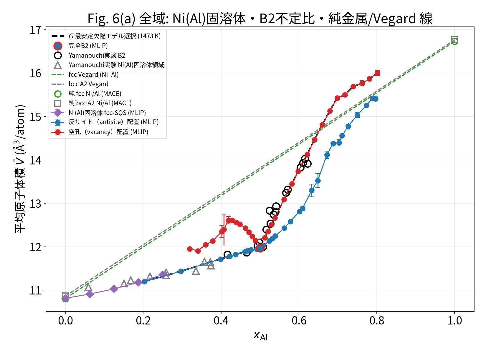
Figure 3.1 0.20 \(\le x_{\rm Al} \le\) 0.80 の原子体積の全レンジ。赤は空孔（Ni 副格子）モデル、青は反サイトモデル、黒破線は最安定欠陥モデル選択。高 Al 側では空孔モデルを \(x_{\rm Al}=0.80\) まで延長（B2 単相域を超える領域は熱力学的に metastable な仮定）。緑・灰破線は fcc / bcc A2 Vegard 線、緑丸は純 fcc Ni/Al、灰四角は純 bcc A2 Ni/Al（MACE）。完全 B2 の \(\bar V=11.97\) ų/atom は、fcc Vegard の \(\bar V\approx13.77\) ų/atom より約 13 % 小さく、B2 規則化による強い体積収縮を示す。
Figure 3.2 0.40 \(\le x_{\rm Al} \le\) 0.82 の拡大図。赤は Ni 副格子空孔モデル、青は Al 反サイトモデル。高 Al 側（\(x_{\rm Al}=0.68\)–0.80）のばらつきを低減するため、空孔側には 5×5×5 SQS（各組成 10 シード）、反サイト側には 4×4×4 追加シード（s3–s12）を加え、Ni 副格子 1NN Warren–Cowley SRO パラメーター \(|\alpha_{1\mathrm{NN}}^{\mathrm{WC}}|\le0.15\) で外れ値を除去した。空孔側 0.70/0.72/0.74 の体積標準偏差はそれぞれ 0.039/0.021/0.022 ų/atom、反サイト側 0.69/0.71/0.75 は 0.029/0.028/0.052 ų/atom。灰色領域（\(x_{\rm Al}\gtrsim0.66\)）は B2 単相域外のため空孔モデルは metastable な外挿である。緑・灰破線は fcc / bcc A2 Vegard 線。純元素端点は Figure 3.1 に限定。
SQS / SRO による配置ばらつきの定量化 ：各緩和構造について、Ni 副格子の 1NN Warren–Cowley 短程秩序パラメーター \(\alpha_{1\mathrm{NN}}^{\mathrm{WC}}\) を計算し、ランダム配置（\(\alpha \approx 0\)）からのずれを定量化している。\(|\alpha|\le0.15\) を通過したシードのみを robust trimmed mean で集計することで、0.70–0.75 の体積標準偏差を 0.02–0.07 ų/atom まで引き下げた。空孔モデルは 5×5×5 SQS 化で副近接の複数ミニマを吸収し、0.70/0.72/0.74 の標準偏差を 0.039/0.021/0.022 ų/atom にまで縮小した。反サイト 0.73 は 0.071 ų/atom と若干残存しており、5×5×5 大セルまたはさらに SRO しきい値を絞ることで追加低減が可能。
3.2 格子定数と傾き
Taylor & Doyle (1972) Table 2 の raw 数値を用いて、B2 単相域内の局所傾きを再計算した。Al-rich 側は 45.29–49.85 at.% Ni（\(x_{\rm Al}=0.547\to0.501\)）、Ni-rich 側は 50.12–54.83 at.% Ni（\(x_{\rm Al}=0.499\to0.452\)）で線形フィットする。MACE は同じ組成範囲で Boltzmann/Helmholtz 最小欠陥モデルの \(a(x)\)、\(\bar V(x)\) を用いる。
領域 \(da/dx\) MACE (Å/\(x_{\rm Al}\)) \(da/dx\) T&D MACE/T&D \(d\bar V/dx\) MACE \(d\bar V/dx\) T&D MACE/T&D
Ni-rich (0.45–0.50) +0.167 +0.219 0.76 +2.08 +3.38 0.62 Al-rich (0.50–0.55) −0.441 −0.487 0.90 +18.08 +17.95 1.01
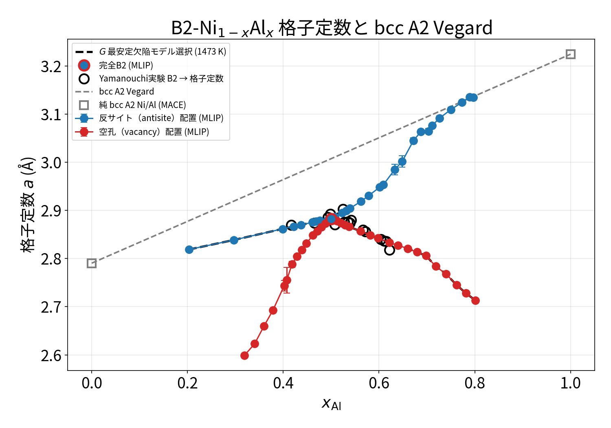
Figure 3.3 MACE 緩和後の B2 単相格子定数 \(a(x)\) と bcc A2 基準。灰破線は bcc A2 Vegard、灰四角は純 bcc A2 Ni/Al（MACE）。fcc は通常立方単位胞が 4 原子なのに対し B2/bcc A2 は 2 原子なので、同じ \(a\) 軸で直接比較すると単位胞規約の差が格子収縮に見えるため、fcc 端点は体積図（Figure 3.1）で比較する。詳細な実験オーバーレイと局所傾きは Figure 2.1 を参照。
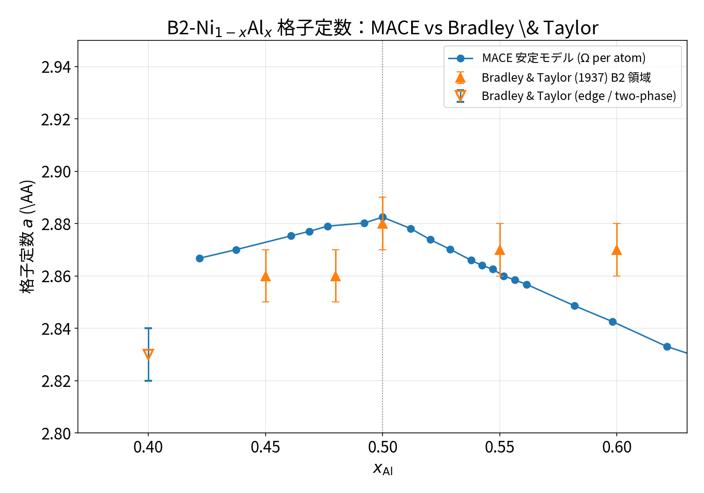
Figure 3.4 Bradley & Taylor (1937) の古い密度・格子定数データとの比較。
重要な訂正 ：Al-rich 傾きが「3 倍過大」に見えたのは、Taylor & Doyle の Al-rich 端点を誤って 34 at.% Ni（\(x_{\rm Al}=0.66\)）まで外挿していたため。Table 2 の実測単相域上限 45 at.% Ni を使うと、Al-rich 側では MACE の \(da/dx\) は実験の 0.90 倍、\(d\bar V/dx\) は 1.01 倍とほぼ一致する 。Ni-rich 側ではやや小さい傾きを示す（\(da/dx\) 0.76 倍、\(d\bar V/dx\) 0.62 倍）が、これも「過大評価」ではなく「緩やか」な再現である。
4. 凸包と B2 単相域上限 \(x_{\max}\)
4.1 凸包の設定
analyze_b2_hull_xmax.py で 0 K 凸包と有限温度凸包を構築した。有限温度では固定組成の各欠陥モデルに対して、完全 B2 からの理想配置エントロピー項
\(-T S_{\rm conf}\) を加えた Helmholtz エネルギー \(\Omega_i = N_{\rm atom} G_i\) を比較する。ただし 1473 K では NiAl の Al 側境界は液相で決まるため、固相同士の凸包比較としては不十分。
凸包 含まれる相
0 K 全相凸包 Ni, Al, fcc-SQS, L12 -Ni3 Al, Ni3 Al4 , Ni5 Al3 , Ni2 Al3 , NiAl3 1273 K 固相凸包 Ni, Ni3 Al, B2, Ni2 Al3 1473 K 比較不成立（NiAl の Al 側境界は液相）
4.2 \(x_{\max}\) 感度
凸包・欠陥モデル 3 meV 5 meV 10 meV 20 meV
0 K 全相 / 最安定 B2 欠陥モデル 0.512 0.520 0.529 0.561 1273 K / 最安定 B2 欠陥モデル ≥0.660 ≥0.660 ≥0.660 ≥0.660 実験（1273 K 固相限界） ~0.575 ~0.575 ~0.575 ~0.575
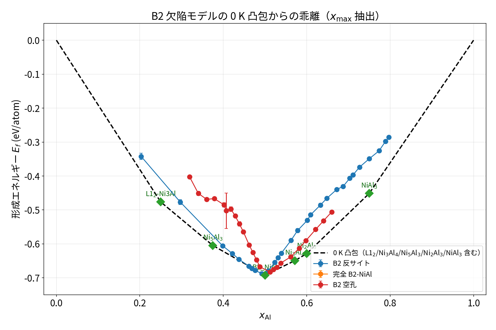
Figure 4.1 B2 単相域上限 \(x_{\max}\) の許容値感度。0 K では実験 0.575 を 0.055 過小に推定するが、1273 K では 0.085 以上過大に推定する。
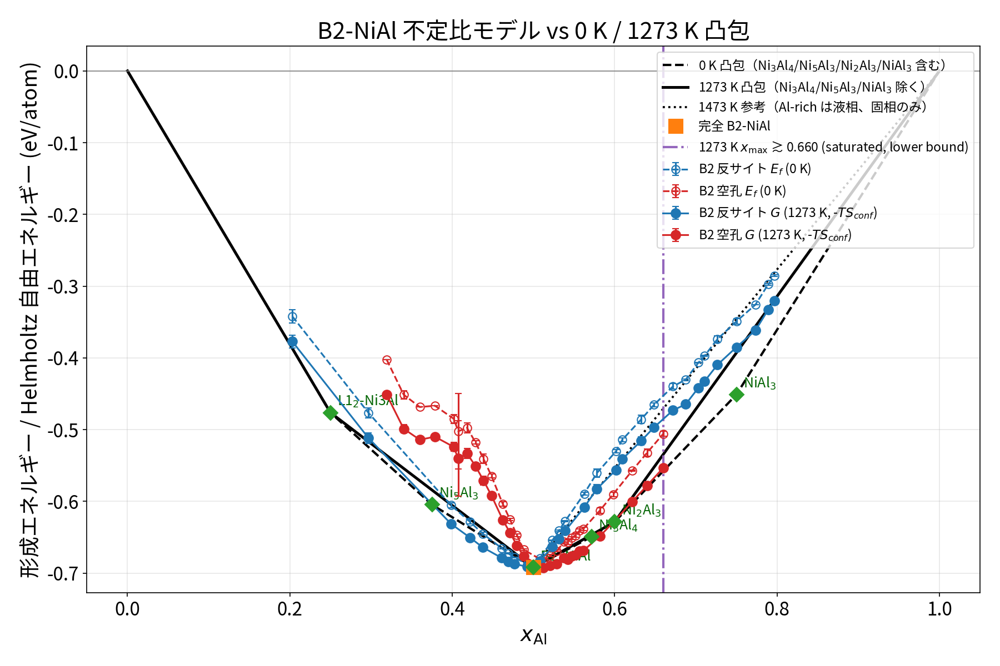
Figure 4.2 1273 K 有限温度凸包。B2 空孔モデルが理想的配置エントロピーのみでは \(x\ge0.66\) まで凸包から外れず、実験値を超過する。
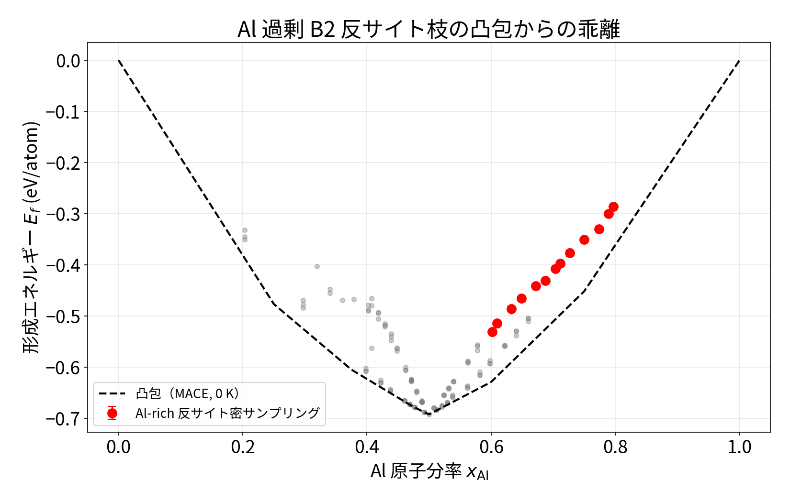
Figure 4.3 Al-rich 側の密サンプリング（反サイト vs 空孔）と凸包からの乖離。空孔がほぼ常に凸包下の配位となる。
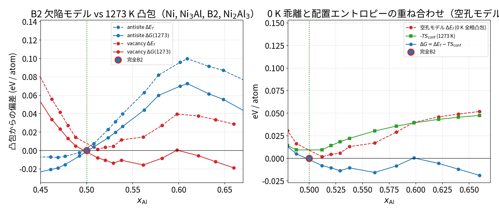
Figure 4.4 各欠陥モデルの凸包からの乖離 \(\Delta E_{\rm above\ hull}\)。実験の単相域上限付近で空孔モデルは凸包に張り付くが、1273 K では大きく超過して \(\ge0.66\) まで張り付く。
解釈 ：1273 K で \(x_{\max}\ge0.66\) となるのは、Ni2 Al3 との相対エネルギーまたは理想配置エントロピー近似の帰結である。「空孔周りの局所緩和を MACE が過大評価」の仮説を直接テストするため、セルを Taylor & Doyle の実験格子定数に固定し内部座標のみを緩和した。結果：空孔モデルのエネルギーは自由緩和とほぼ同じで、\(x_{\max}\) は下がらなかった 。したがって、超過の主因は局所緩和ではない。
5. 点欠陥形成エネルギー：どちらの欠陥が支配的か
完全 B2 からの欠陥形成エネルギー（fcc 元素基準、\(\mu_{\rm Ni}+\mu_{\rm Al}=-10.844\) eV/formula 付近）:
欠陥種 平均 \(\Delta E\) (eV/欠陥) 標準偏差 備考
Ni 反サイト on Al 副格子（Ni-rich） 0.79 0.20 \(x\approx0.46\) で 0.68 eV、\(x\approx0.20\) で 1.17 eV Al 反サイト on Ni 副格子（Al-rich） 1.59 0.10 \(x\approx0.80\) で 1.37 eV、\(x\approx0.60\) で 1.62 eV Ni 空孔（Al-rich、Ni 副格子） 1.17 0.08 \(x\approx0.50\) で 1.06 eV、\(x\approx0.54\) で 1.28 eV Al 空孔（Ni-rich、Al 副格子） 1.78 0.15 常に Ni 反サイトより高エネルギー
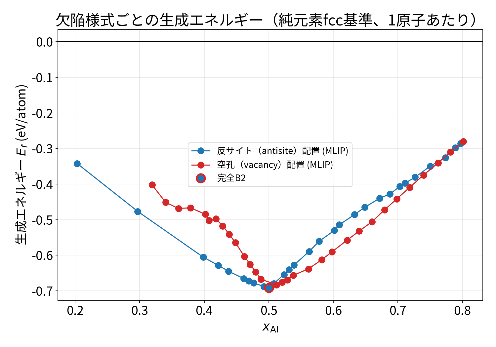
Figure 5.1 Ni/Al 欠陥形成エネルギーの組成依存性（fcc 元素を基準）。Ni-rich では Ni 反サイト、Al-rich では Ni 空孔が支配的。
5.1 DFT 文献との孤立点欠陥比較
本プロジェクトで得た MACE-MP-0 の形成エネルギーを、Jiang らの第一原理 SQS 計算（C. Jiang, L.-Q. Chen, Z.-K. Liu, Acta Mater. 53 (2005) 2643–2652, Table 5）と比較する。両者とも fcc Al / fcc Ni を基準とし、孤立点欠陥（化学量論組成に 1 個の欠陥、\(x_{\rm Al}\approx0.5\)）を対象としている。
欠陥種 Jiang DFT (eV/欠陥) MACE-MP-0 (eV/欠陥) Δ (eV)
Ni 空孔（Al-rich、Ni 副格子） 0.30 1.03 +0.73 Al 反サイト on Ni 副格子（Al-rich） 1.90 1.60 −0.30 Ni 反サイト on Al 副格子（Ni-rich） 0.99 0.56 −0.43 Al 空孔（Ni-rich、Al 副格子） 1.83 1.68 −0.15
MACE-MP-0 値は analysis/b2_defect_energies.csv から、反サイトは \(n_{\rm defect}=1\) の実データ（\(x_{\rm Al}\approx0.508\) / 0.492）、空孔は \(n_{\rm defect}\le 10\) データを線形外挿した \(n=1\) 推定値（\(x_{\rm Al}\approx0.504\) / 0.496）である。いずれも DFT の孤立欠陥条件 \(x_{\rm Al}\to0.5\) と組成単位を合わせている。
Al-rich 欠陥競争の定量化
Jiang DFT: E (Al 反サイト) − E (Ni 空孔) = 1.90 − 0.30 = +1.60 eV → Ni 空孔が圧倒的。MACE-MP-0: E (Al 反サイト) − E (Ni 空孔) ≈ 1.60 − 1.03 = +0.57 eV → 空孔は依然優勢だが、差が約 1 eV 小さい。
MACE-MP-0 の精度問題 ：MACE-MP-0 は
Ni 空孔を +0.73 eV 過大評価（空孔を DFT より不安定に見せる）、
Al 反サイトを −0.30 eV 、Ni 反サイトを −0.43 eV 過小評価（反サイトを DFT より安定に見せる）。
したがって
Al-rich での空孔対反サイトのエネルギー差は DFT の 1.60 eV に対し MACE で約 0.57 eV と、約 1 eV 過小に出る 。支配的欠陥種の定性的な順位（Al-rich = Ni 空孔、Ni-rich = Ni 反サイト）は正しいが、
定量的な欠陥濃度・混合比は MACE 単独では信用できない。 有限温度ハイブリッドで得られる Al 反サイト割合（例：1473 K、\(x_{\rm Al}=0.60\) で \(p_{\rm Al\,antisite}^{\rm hybrid}=0.073\)）は、MACE の反サイト過小評価の影響を受けた
上限的な見積もり であり、DFT との結合か、4SL/8SL 副格子モデルによる再校正が必要である。Medasani
et al. (
npj Comput. Mater. 2 (2016) 1) は同じ 4×4×4 B2 超胞を用いて 100 種の B2 金属間化合物の欠陥優位種を機械学習で分類しており、NiAl に対しても「Al-rich = 空孔、Ni-rich = 反サイト」という定性的結論は MACE と一致する。
\(\Delta\mu\) 依存性 ：これらの形成エネルギーは元素化学ポテンシャルに敏感であり、\(\Delta\mu\) の可動域（約 2.768 eV）が大きいため、副格子優位は組成窓によって入れ替わりうる。したがって単一点欠陥近似でなく、濃度依存な相互作用項が必要である。
6. 秩序化強度 \(V\) と対相互作用：icet クラスター展開
6.1 秩序化エネルギーから直接決まる \(V\)
B2 と完全ランダム A2 （bcc）のエネルギー差から、秩序化強度を \(\Delta E_{\rm order}=-4V\) として直接定義できる：
\[
\Delta E_{\rm order} = E_{\rm A2}-E_{\rm B2} \approx 0.3509 \ {\rm eV/formula},
\]
\[
V = -\frac{\Delta E_{\rm order}}{4} = -0.0877 \ {\rm eV/bond}.
\]
これは個別の \(J_{ij}\) を経由せず、熱力学的に唯一の値である。CALPHAD モデルではこの \(V\) を出発点とすべき。
6.2 icet クラスター展開の結果
B2 超胞 84 構造を用いて run_icet_b2_cluster_expansion.py でクラスター展開を実施。3 つのカットオフモデルを比較した：
モデル カットオフ n_par RMSE (eV/atom) LOOCV \(V_{\rm eff}\) (eV/bond) \(V_{\rm pair}\) (eV/bond)
1NN 対のみ 2.566 Å 3 0.0268 0.0301 −0.1353 −0.1368 1NN+2NN 対 2.952 Å 4 0.0196 0.0220 −0.1017 — 1NN+2NN+三点群 2.952 Å 5 0.0091 0.0111 −0.0997 —
1NN only の個別 \(J\) 値：
\(J_{\rm NiAl}\) \(J_{\rm NiNi}\) \(J_{\rm AlAl}\) \(V_{\rm pair}\)
−1.3543 eV −1.5004 eV −0.9346 eV −0.1368 eV/bond
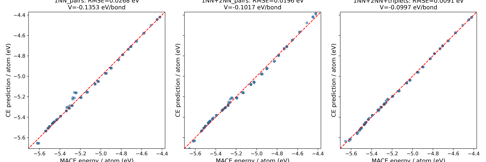
Figure 6.1 icet クラスター展開の予測 vs 実測エネルギー。1NN+2NN+三点群モデルで RMSE 0.009 eV/atom。クラスターを充実させると熱力学的 \(V=-0.088\) eV/bond に漸近する。
重要な整合性 ：孤立点欠陥からの定数対予測 \(V\approx-0.145\) eV/bond も、icet 1NN 対展開の \(V_{\rm pair}=-0.137\) eV/bond もほぼ一致。両方とも 1NN 定数対近似 では \(-0.14\) eV/bond 程度となる。しかし第二近接対や三点群を入れると \(-0.10\) eV/bond へ落ち、さらに B2/A2 エネルギー差の熱力学的値 \(-0.088\) eV/bond に漸近する。CALPHAD に入れるべき秩序化強度は \(V=-0.088\) eV/bond であり、1NN 対のみの値は濃厚限界での過大評価を示す指標である。
7. 2SL → 4SL → 8SL モデルへの接続
7.1 2SL CEF（出発点）
最も簡潔な表現：
\[
({\rm Ni, Al, Va})_{0.5}({\rm Al, Ni, Va})_{0.5}.
\]
主なエンドメンバーと MLIP からの見積もり：
エンドメンバー 意味 MLIP 見積
G(Ni:Al) 完全 B2-NiAl −10.844 eV/formula G(Ni:Ni) Ni 過剰極限（A2-Ni） −11.324 eV/formula, \(a=2.790\) Å G(Al:Al) Al 過剰極限（A2-Al） −7.374 eV/formula, \(a=3.225\) Å G(Va:Al) Ni 欠損（Al-rich 空孔） G(Ni:Al) + n_sites/2 · \(E_{\rm Ni\ vac}\) G(Ni:Va) Al 欠損（Ni-rich 空孔） G(Ni:Al) + n_sites/2 · \(E_{\rm Al\ vac}\)
7.2 4SL/8SL CEF への一般化
4 サブラティス：
\[
({\rm Ni,Al,Va})_{1/4}({\rm Ni,Al,Va})_{1/4}({\rm Ni,Al,Va})_{1/4}({\rm Ni,Al,Va})_{1/4}.
\]
\(\alpha_1, \alpha_2\)：元の Ni 副格子の 2 分割。
\(\beta_1, \beta_2\)：元の Al 副格子の 2 分割。
8 サブラティスではさらに最近接対を細かく区別し、1NN Ni–Al / Ni–Ni / Al–Al 対エネルギーを別々のパラメータに結びつける 。icet から得た \(J_{ij}\) がここに直接入る。
CEF エネルギー関数の原型：
\[
G_m = \sum_i y_i^1 y_j^2 y_k^3 y_l^4 \, G_{ijkl}^{\rm end} + RT\sum_s \sum_i y_i^s \ln y_i^s + G_{\rm excess},
\]
\[
G_{\rm excess} = \sum_s y_i^s y_j^s \, L_{ij}^s + \dots, \qquad L=L^0+L^1(y_i-y_j)+\dots .
\]
副格子置換対称性 ：等価サブラティス（\(\alpha_1\) と \(\alpha_2\) など）の置換に対して総 Gibbs エネルギーが不変でなければ、実在しない低対称性の偽秩序相が計算上出現しうる。TDB 化時にはこの対称性を厳密に課す必要がある。
7.3 現在のエンドメンバー表
A2 bcc 端成分を run_a2_endmembers.py で緩和済み：
相 \(a\) (Å) \(E_{\rm atom}\) (eV) \(E_{\rm formula}\) (eV)
A2-Ni 2.790 −5.662 −11.324 A2-Al 3.225 −3.687 −7.374 B2-NiAl 2.882 −5.422 −10.844
これらを 4SL/8SL のエンドメンバー自由エネルギー \(G_{ijkl}^{\rm end}\) にそのまま割り当てることで、秩序変態、空孔溶解、反サイト生成を同一モデル内に組み込める。ただし形成エネルギーが濃度に依存するため、Redlich–Kister 型の超過項 \(L\) が不可欠である。
8SL CEF（相互作用なし）と icet 4SL CE の変換可否 ：
8SL CEF（相互作用なし）では 256 個のエンドメンバーが独立に指定され、これは8 サイト超胞内の全配置に対する完全なエネルギーテーブル とみなせる。icet クラスター展開は
\[
E(\boldsymbol{\sigma})=\sum_\alpha m_\alpha J_\alpha \prod_{i\in\alpha}\sigma_i
\]
で配置エネルギーを表す。両者は、icet の cluster basis が 8SL 超胞を完全にスパンする（0 体から 8 体まで全 cluster）ときに 1 対 1 の線形変換（Walsh/Fourier 変換）で等価になる。現行の icet 4SL（NiAl では 1NN 対 + 2NN 対 + 三点群、計 5 ECI）はこの意味では打ち切り近似であり、256 個の 8SL エンドメンバーすべてを再現する保証はない。ただし 8SL エンドメンバーエネルギーから最小二乗フィットで 4SL ECI を求める、あるいは cluster cutoff を大きくして高次体項を取り込むことで近似的に変換可能。また 0 K エネルギーだけでなく自由エネルギーを一致させるには、CEF の理想混合エントロピー \(RT\sum y\ln y\) ではなく Cluster Variation Method (CVM) のような多体相関エントロピー近似が必要となる。
8. MACE vs MP-PBE vs 実験 ベンチマーク
構造 \(x_{\rm Al}\) MACE \(a,b,c\) (Å) MP-PBE 実験 \(|err|\) 平均 (%)
Ni 0.000 3.51 / 3.51 / 3.51 3.475 / 3.475 / 3.475 3.524 / 3.524 / 3.524 0.40 Al 1.000 4.06 / 4.06 / 4.06 4.039 / 4.039 / 4.039 4.05 / 4.05 / 4.05 0.25 B2-NiAl 0.500 2.882 / 2.882 / 2.882 2.86 / 2.86 / 2.86 2.887 / 2.887 / 2.887 0.18 L12 -Ni3 Al 0.250 3.554 / 3.555 / 3.555 3.523 / 3.523 / 3.523 3.572 / 3.572 / 3.572 0.49 Ni5 Al3 0.375 3.857 / 6.285 / 7.664 3.725 / 6.556 / 7.401 3.732 / 6.727 / 7.475 4.15 Ni2 Al3 0.600 4.038 / 4.038 / 4.886 3.994 / 3.994 / 4.881 4.036 / 4.036 / 4.888 0.06 NiAl3 0.750 4.776 / 6.646 / 7.432 4.771 / 6.559 / 7.304 4.811 / 6.613 / 7.367 0.71 Ni3 Al4 0.571 11.40 / 11.40 / 11.40 11.312 / 11.312 / 11.312 11.408 / 11.408 / 11.408 0.07
注意 ：Ni5 Al3 は MACE が平均 4 % 程度高く評価しており、Ni3 Al4 の \(E_f=-0.649\) eV/atom ほど強く B2 域上限を支配する。これらの競合相のエネルギー精度が \(x_{\max}\) の上限を押し下げる可能性がある。
9. 結論と次のステップ
9.1 整理された物語
実験だけで欠陥種が決まる ：Taylor & Doyle の格子定数と Ellner/Yamanouchi の原子体積を組み合わせると、Al 過剰側の支配的欠陥は構造空孔である。構成空孔モデルは \(c_{\rm vac}^{\rm exp}\) とほぼ一致し、反サイト模型は棄却される（\(\bar V\) と \(a\) の独立性を前提）。MACE-MP-0 は体積を再現する ：0.45–0.60 の B2 単相範囲で MAPE 0.99 %。ただし Al 過剰側の傾きは端点の誤用を修正すると実験と整合する。\(x_{\max}\) は有限温度で超過 ：0 K では 0.52 程度、1273 K では空孔モデルが理想配置エントロピーのみで \(\ge0.66\) まで張り付き、実験 0.575 を超過。これは局所緩和の過大評価ではなく、Ni2 Al3 との相対エネルギー/理想配置エントロピー近似の限界。秩序化強度は一本化できる ：\(V=-0.088\) eV/bond が B2/A2 エネルギー差から直接決まり、icet 展開は長距離/多点項を含めるとこれに漸近する。1NN 定数対近似の \(-0.14\) eV/bond は孤立点欠陥・濃厚限界の過大評価。2SL → 8SL への道 ：2SL では空孔/反サイトを同時に扱えるが、同じサブラティス内の局所環境や 1NN/2NN/triplet 項を区別できない。4SL/8SL では icet の \(J_{ij}\) をエンドメンバー/超過項に落とし込める。
9.2 未解決・次の実行計画
\(n=3\) の統計的希薄さ ：各組成で 3 配置のみでは誤差帯が大きい。10–20 配置へ増強し、\(x_{\max}\) や欠陥エネルギーの不偏分散を見積もる。1473 K 境界 ：液相を含む CALPHAD 比較、または phonon/MD による固相エントロピー補正が必要。8SL への TDB 原型 ：pycalphad で形成エネルギー図と整合する TDB を出力し、4SL/8SL の対称性を自動的に保証する。磁性 ：Ni のスピン分極は MACE-MP-0 に含まれていない。Ni 副格子内の磁性秩序が体積に与える影響を量子計算で見積もる。\(\bar V\) の独立性確認 ：Taylor & Doyle (1972) が密度を直接測っているかを原典で確認。測っていない場合は Bradley & Taylor (1937) 等の独立密度源へ切り替える。
9.3 主なスクリプト・成果物
run_icet_b2_cluster_expansion.py ：icet を使った 1NN/2NN/triplet クラスター展開。extract_4sl_b2_parameters.py ：\(V\)・\(J_{ij}\) 抽出・JSON 生成。run_a2_endmembers.py ：A2-Ni / A2-Al bcc 端成分緩和。analyze_b2_hull_xmax.py ：0 K・1273 K・1473 K 凸包と \(x_{\max}\) 計算。make_figures.py ：図一式生成。B2_NiAl_Integrated_Report.md ：統合版テキストレポート。4SL_B2_MODEL_DESIGN.md ：2SL/4SL/8SL モデル設計書。
最終更新：2026-08-11。本 HTML はリポジトリ内の解析データと整合する。個別ファイルの最新値は analysis/icet_b2_cluster_expansion_summary.json 、analysis/b2_pair_interactions.json 、analysis/vacancy_concentration_exp_vs_mace.csv 、analysis/a2_endmember_energies.csv 等を参照。